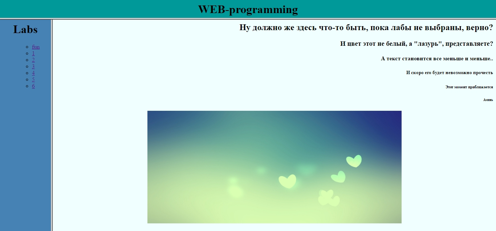

Розробка документа з фреймами
Створити гіпертекстову сторінку з трьома фреймами. У верхній фрейм помістити назву даного курсу. В лівий фрейм помістити список лабораторних робіт. В правому фреймі повинно з'являтись завдання на відповідну роботу, що буде вибрана в лівому фреймі.
Вирішення
